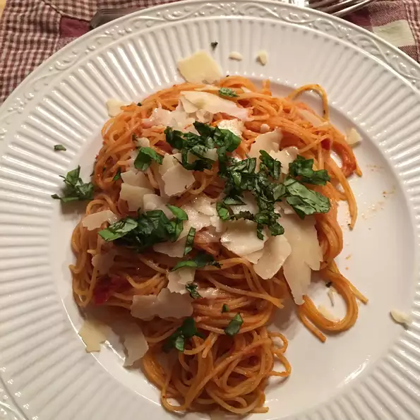

Tomoto and Garlic Pasta

Description
This easy and healthy cherry tomato pasta recipe takes just 20 minutes to prep, so it's a perfect weeknight dinner. Cooking garlic cloves whole and then mashing them into the sauce not only saves time, it creates a mellow garlic flavor that melds seamlessly into the silky burst cherry tomatoes.
Ingredents
- 1 (8 ounce) package angel hair pasta
- pounds tomatoes
- 4 cloves crushed garlic
- 1 tablespoon olive oil
- 1 tablespoon chopped fresh basil
- 1 tablespoon tomato paste
- salt to taste
- ground black pepper to taste
- ¼ cup grated Parmesan cheese
Steps to cooking
-
Place tomatoes in a kettle, and cover with cold water. Bring just to the boil. Pour off water, and cover again with cold water. Peel. Cut into small pieces.
-
Cook the pasta in a large pot of boiling salted water until al dente.
-
In a large skillet or saute pan, saute the garlic in enough olive oil to cover the bottom of the pan. The garlic should just become opaque, not brown. Stir in the tomato paste. Immediately stir in the tomatoes, and salt and pepper. Reduce heat, and simmer until the pasta is ready; add the basil.
-
Drain the pasta, but do not rinse in cold water. Toss with a couple of tablespoons of olive oil, and then mix into the sauce. Reduce the heat as low as possible. Keep warm, uncovered, for about 10 minutes when it is ready to serve. Garnish generously with fresh Parmesan cheese.
-
VARIATIONS: Saute fresh quartered mushrooms with the garlic, or add shoestring zucchini along with the tomato.